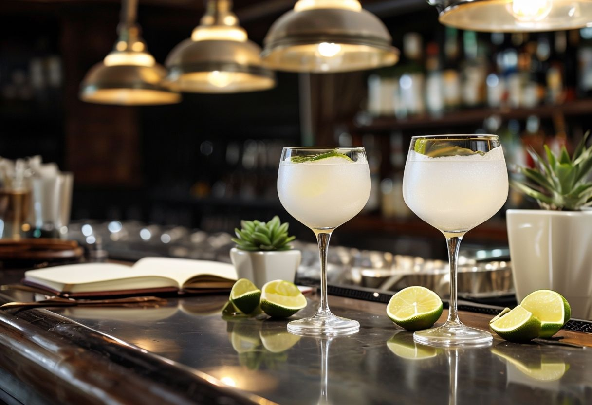
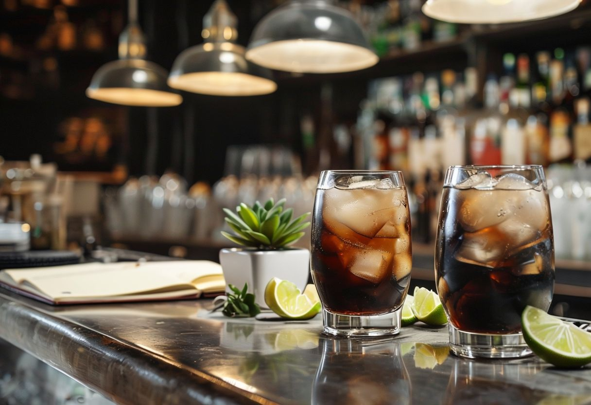
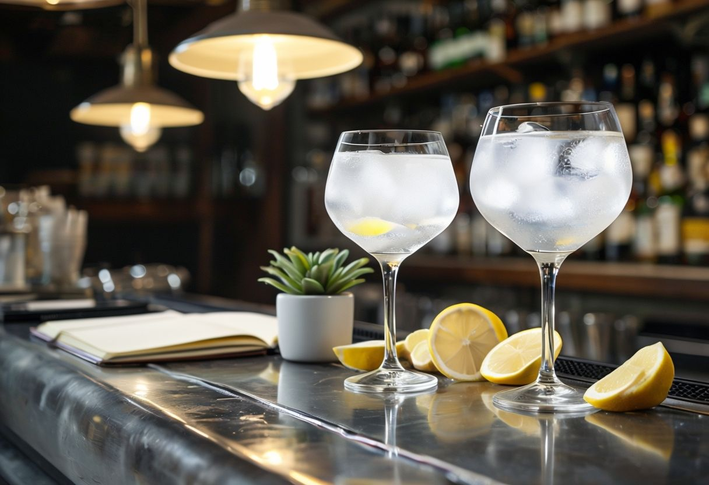
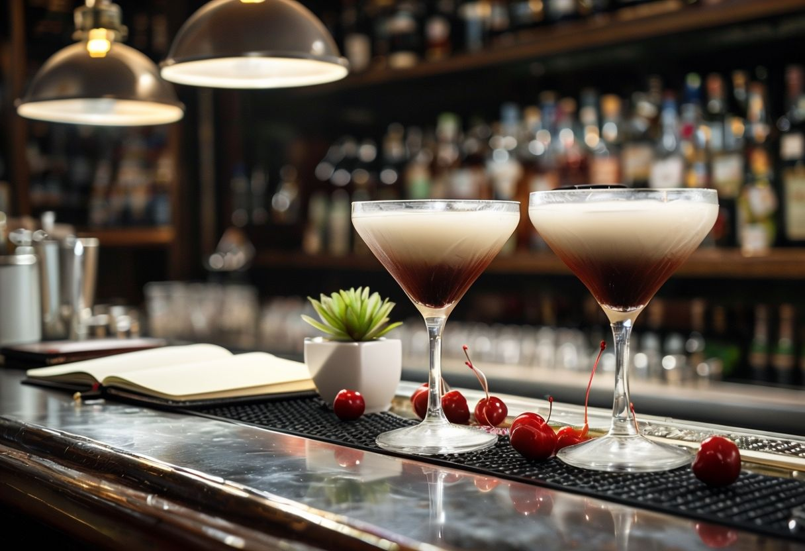
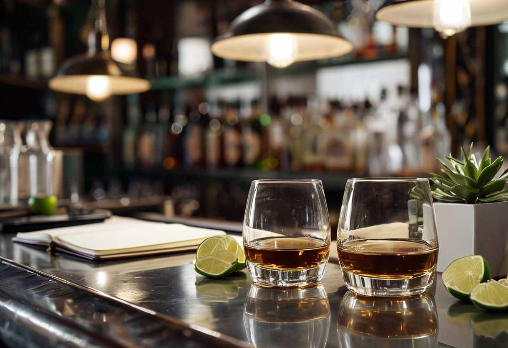

Cosmopolitan é um coquetel elegante e refrescante, conhecido por sua cor rosa vibrante. Sua base é a vodca, combinada com licor de laranja, suco de cranberry e suco de limão fresco.

Caipirinha
Caipirinha é uma bebida tradicional brasileira, conhecida por sua refrescância e simplicidade. Seu sabor é uma combinação equilibrada de cachaça (aguardente de cana), limão-taiti, açúcar e gelo.

Dark and Stormy
Dark and Stormy é um coquetel clássico que combina rum escuro e ginger beer (cerveja de gengibre), servido com gelo. Sua aparência distintiva, com o rum afundando no ginger beer, cria uma divisão entre as duas camadas, lembrando uma tempestade.

Gin e Tônica
Gin Tônica é um coquetel clássico que combina a sofisticação do gin com o frescor efervescente da água tônica. Sua receita original é simples, composta por apenas dois ingredientes: gin e água tônica.

Manhattan
Manhattan é um coquetel clássico e elegante, perfeito para um momento sofisticado no fim do dia. Sua receita varia inclui whisky americano (ou de centeio), vermute tinto, algumas gotas de bitter e uma cereja como guarnição.

The Macallan 18 Double Cask
The Macallan 18 Anos Double Cask é um single malt escocês excepcional, envelhecido por 18 anos em barris de carvalho temperados com xerez americano e europeu.